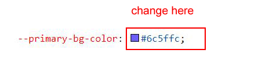

Primary Color For All Themes
How to Change Primary Color for All Themes (Light, Dark, Transparent)?
Please follow the below steps to change Primary Color
Step 1 :
To change Primary Color you have to open _bootstrap-styles.scss file and replace what color you want as shown in below
Rootpath : _bootstrap-styles.scss (wwwroot/assets/scss/bootstrap/_bootstrap-styles.scss )

Step 2 :
Note : After Changing color you must run gulp command i.e, gulp watch . Refer gulp page for more gulp commands click here.